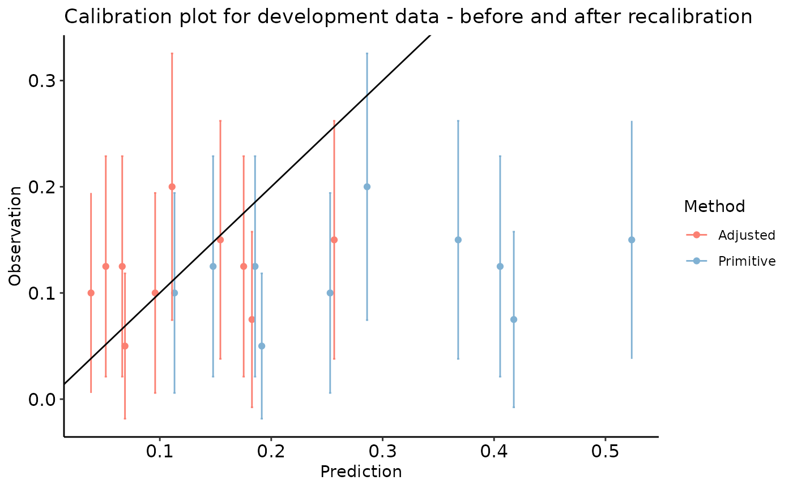

library(predtools)
library(magrittr)
library(dplyr)
#>
#> Attaching package: 'dplyr'
#> The following objects are masked from 'package:stats':
#>
#> filter, lag
#> The following objects are masked from 'package:base':
#>
#> intersect, setdiff, setequal, union
library(ggplot2)What is intercept adjustment?
In clinical prediction modeling, model updating refers to the practice of modifying a prediction model before it is used in a new setting to improve its performance. One of the simplest updating methods for risk predication models is a fixed odds-ratio transformation of predicted risks to improve the model’s calibration-in-the-large.
interceptAdj function uses an approximate equation for recovering the conditional odds-ratio from the observed mean and predicted variance of risks in validation and development sets, respectively.
A step-by-step guide.
Imagine the variable y indicates risk of disease recurrence in a unit of time. We have a prediction model that quantifies this risk given a patient’s age, disease severity level, sex, and whether the patient has a comorbidity.
The package comes with two exemplary datasets. dev_data and val_data. We use the dev_data as the development sample and the val_data as the external validation sample.
Model updating matters when there is a considerable difference between mean of the observed risks in development and validation sets. The average of y in the above two datasets are almost identical. Therefore, to have a meaningful scenario, we create a secondary (arbitrary) outcome (y_alt) in val_data with a lower average (by ~ 50%).
| y | y_alt | |
|---|---|---|
| Min. :0.0000 | Min. :0.00 | |
| 1st Qu.:0.0000 | 1st Qu.:0.00 | |
| Median :0.0000 | Median :0.00 | |
| Mean :0.2975 | Mean :0.12 | |
| 3rd Qu.:1.0000 | 3rd Qu.:0.00 | |
| Max. :1.0000 | Max. :1.00 |
dev_data has 500 rows. val_data has 400 rows.
Here are the first few rows of dev_data:
| age | severity | sex | comorbidity | y |
|---|---|---|---|---|
| 55 | 0 | 0 | 1 | 1 |
| 52 | 1 | 0 | 0 | 0 |
| 63 | 0 | 0 | 1 | 0 |
| 61 | 1 | 1 | 1 | 1 |
| 58 | 0 | 1 | 0 | 0 |
| 54 | 1 | 0 | 0 | 1 |
| 45 | 0 | 0 | 0 | 0 |
We use the development data to fit a logistic regression model as our risk prediction model:
reg<-glm(y~sex+age+severity+comorbidity,data=dev_data,family=binomial(link="logit"))
summary(reg)
#>
#> Call:
#> glm(formula = y ~ sex + age + severity + comorbidity, family = binomial(link = "logit"),
#> data = dev_data)
#>
#> Deviance Residuals:
#> Min 1Q Median 3Q Max
#> -1.2904 -0.8272 -0.6373 1.1570 2.1050
#>
#> Coefficients:
#> Estimate Std. Error z value Pr(>|z|)
#> (Intercept) -1.728929 0.565066 -3.060 0.00222 **
#> sex 0.557178 0.223631 2.492 0.01272 *
#> age 0.005175 0.010654 0.486 0.62717
#> severity -0.557335 0.227587 -2.449 0.01433 *
#> comorbidity 1.091936 0.209944 5.201 1.98e-07 ***
#> ---
#> Signif. codes: 0 '***' 0.001 '**' 0.01 '*' 0.05 '.' 0.1 ' ' 1
#>
#> (Dispersion parameter for binomial family taken to be 1)
#>
#> Null deviance: 602.15 on 499 degrees of freedom
#> Residual deviance: 560.41 on 495 degrees of freedom
#> AIC: 570.41
#>
#> Number of Fisher Scoring iterations: 4Given this, our risk prediction model can be written as:
\(\bf{ logit(p)=-1.7289+0.5572*sex+0.0052*age-0.5573*severity+1.0919*comorbidity}\).
First, let’s see the calibration plot in development and validation datasets. We use calibration_plot from our package to create calibration plots.
dev_data$pred <- predict.glm(reg, type = 'response')
val_data$pred <- predict.glm(reg, newdata = val_data, type = 'response')
calibration_plot(data = dev_data, obs = "y", pred = "pred", title = "Calibration plot for development data")
#> $calibration_plot
calibration_plot(data = val_data, obs = "y_alt", pred = "pred", y_lim = c(0, 0.6),
title = "Calibration plot for validation data")
#> $calibration_plot
To adjust the predicted risks for the validation set, we estimate the correction factor by using function odds_adjust:
odds_correction_factor <- odds_adjust(p0 = mean(dev_data$y), p1 = mean(val_data$y_alt), v = var(dev_data$pred))
odds_correction_factor
#> [1] 0.3116119We can now recalibrate the predictions and reproduce the calibration plot for the validation set.
dev_data$pred <- predict.glm(reg, type = 'response')
val_data$pred <- predict.glm(reg, newdata = val_data, type = 'response')
val_data$odds_adj <- (val_data$pred / (1 - val_data$pred)) * odds_correction_factor
val_data$pred_adj <- val_data$odds_adj / (1 + val_data$odds_adj)
val_data$id <- c(1 : nrow(val_data))
val_data_long <- reshape(data = val_data, direction = "long", varying = c("pred", "pred_adj"), v.name = "preds",
idvar = "id", timevar = "Method", times = c("Primitive", "Adjusted"))
calibration_plot(data = val_data, obs = "y_alt", pred = "pred_adj",
title = "Calibration plot for development data - after recalibration")
#> $calibration_plot
calibration_plot(data = val_data_long, obs = "y_alt", pred = "preds", group = "Method",
title = "Calibration plot for development data - before and after recalibration")
#> $calibration_plot